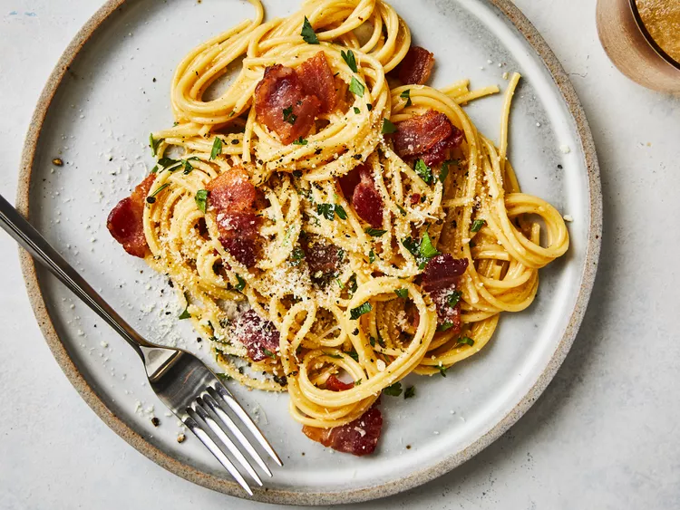

Spaghetti

Description
Spaghetti is a long, thin, solid, cylindrical pasta made from durum-wheat semolina and water. Its name comes from the Italian word spaghetto, which translates to "little string" or "thin cord". When dry, these golden strands look like a neat, rigid bundle of rods; once cooked in boiling salted water, they transform into a tender, pliable heap.
Ingredients
- Spaghetti
- Olive Oil
- Bacon
- Onion
- Garlic
- Dry White Wine
- Eggs
- Parmesan Cheeese
Steps
- Bring a large pot of lightly salted water to a boil. Cook spaghetti in boiling water, stirring occasionally, until tender yet firm to the bite, about 12 minutes. Drain, toss spaghetti with 1 tablespoon olive oil, and set aside.
- Place diced bacon in a large skillet over medium heat; cook and stir until evenly browned, about 10 minutes. Drain bacon on paper towels, reserving 2 tablespoons bacon fat in the skillet.
- Add 1 tablespoon olive oil to bacon fat in the skillet. Add chopped onion and cook over medium heat until onion is translucent. Add minced garlic and cook until fragrant, about 1 minute. Add wine and cook 1 minute more.
- Return cooked bacon to the skillet; add cooked spaghetti. Toss to coat and heat through, adding more olive oil if it seems dry or sticks together. Add beaten eggs and cook, tossing constantly with tongs or a large fork, until eggs are barely set. Quickly add 1/2 cup Parmesan cheese and toss again. Season with salt and pepper (remember that bacon and Parmesan are very salty).
- Serve warm with chopped parsley sprinkled on top and extra Parmesan cheese at the table.
Home